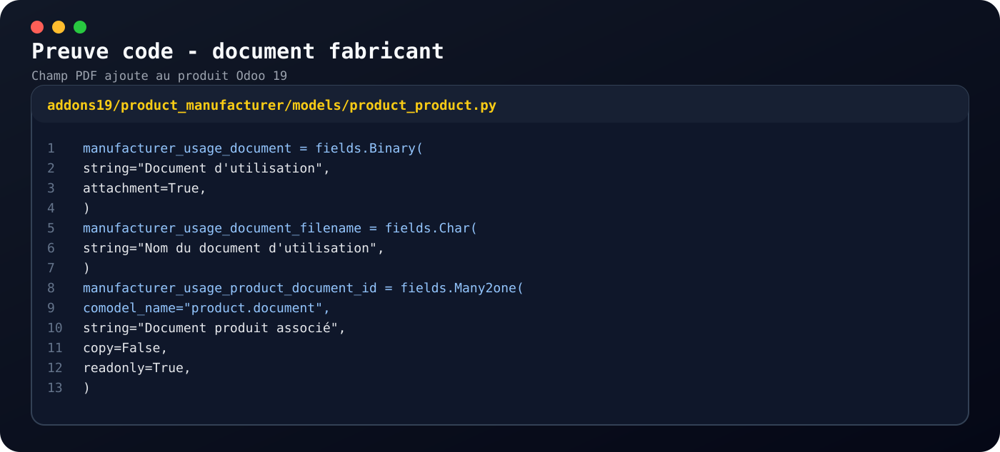
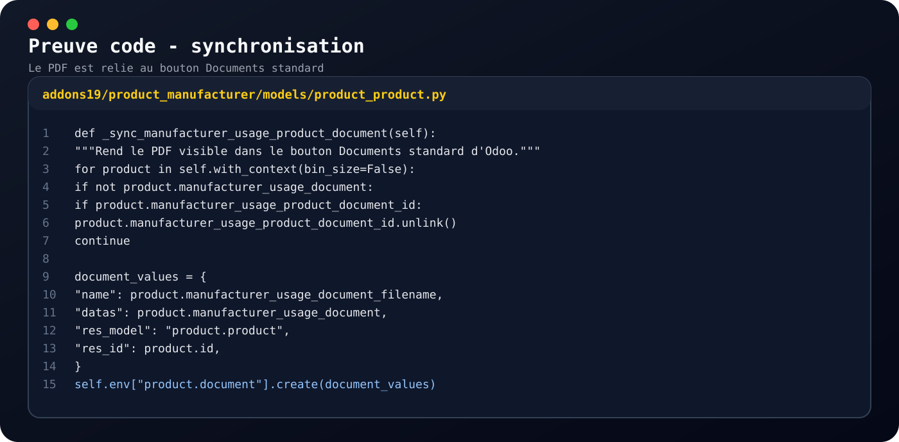
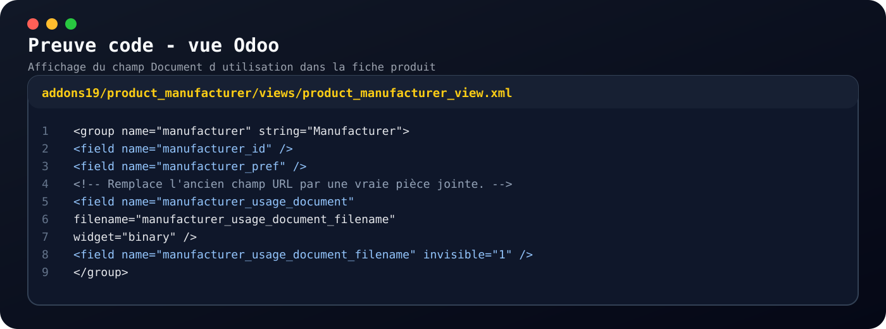
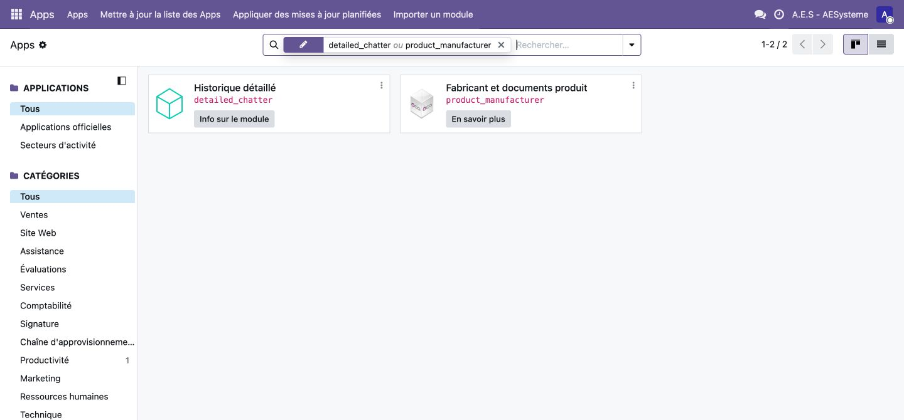
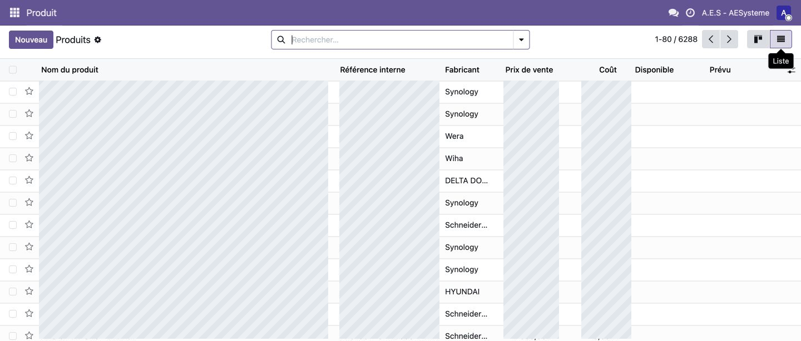
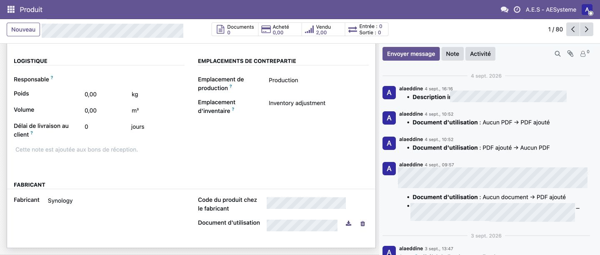

Mission 10 : Migration des documents fabricant avec n8n
Le 11/08/2026
Enonce
Mise en place d'un workflow n8n pour migrer la documentation fabricant des produits
depuis Odoo 12 vers Odoo 19. La migration utilise un systeme de lots, de suivi d'etat,
de mapping et de reprise afin d'eviter les doublons et de pouvoir relancer le traitement.
Preuves
Resume de la migration : workflow n8n, mapping, reprise et resultat du test local.

Code Odoo : ajout du champ PDF Document d'utilisation sur le produit.

Code Odoo : synchronisation du PDF avec les documents standards du produit.

Code XML : affichage du champ Document d'utilisation dans la fiche produit.

Apercu Odoo : module Fabricant et documents produit disponible dans Apps.

Apercu Odoo : colonne Fabricant visible dans la liste des produits, avec donnees sensibles masquees.

Apercu Odoo : champ Document d'utilisation sur la fiche produit, avec informations masquees.